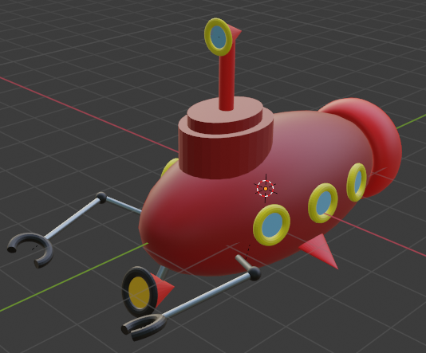
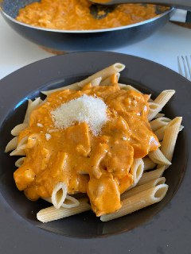
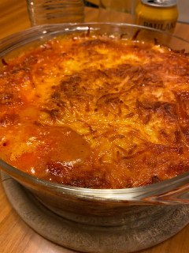
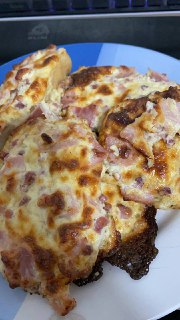
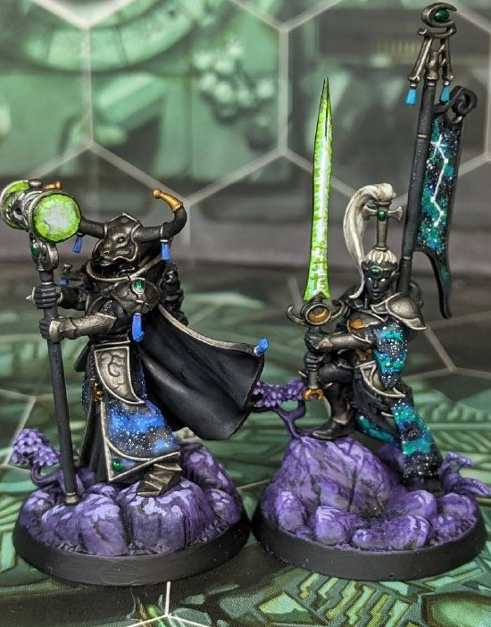

Portfolio
Here's some stuff I've created. Nothing special, almost everything casual.
Blender
During our second semester we are working with Blender creating some beginner models like this submarine.
Food
I love cooking! I try many new things and go into various directions. Here are some examples and you can find a ranking of my favourite cuisines in the 'About me' section.
Recipes made by me
| Name | Origin | Picture |
|---|---|---|
| Penne al Salmone | Italy |  |
| Lasagna | Italy |  |
| Winemaker Buns (in german: "Winzerweckle") | Germany |  |
Painting
I love to paint miniatures. Most of my minis are from different games like Warhammer. Below you can see my latest painted models.
